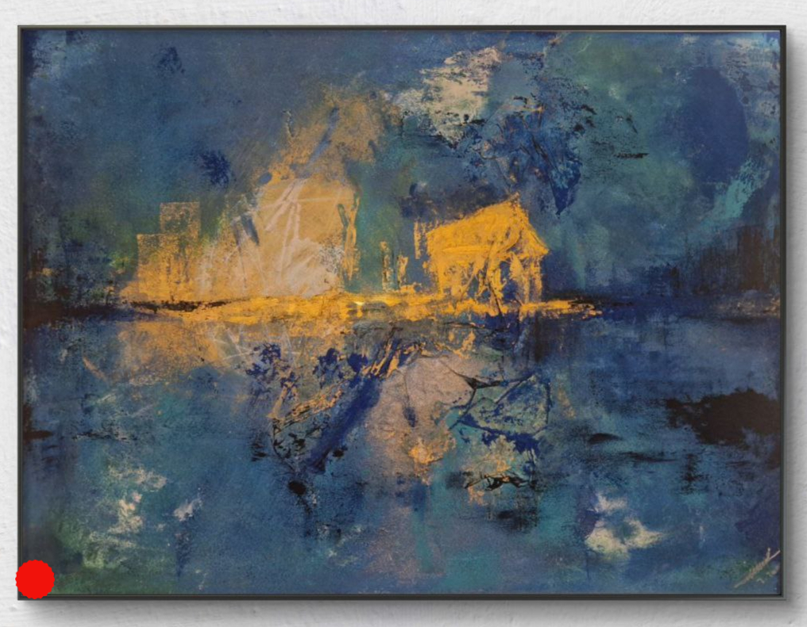
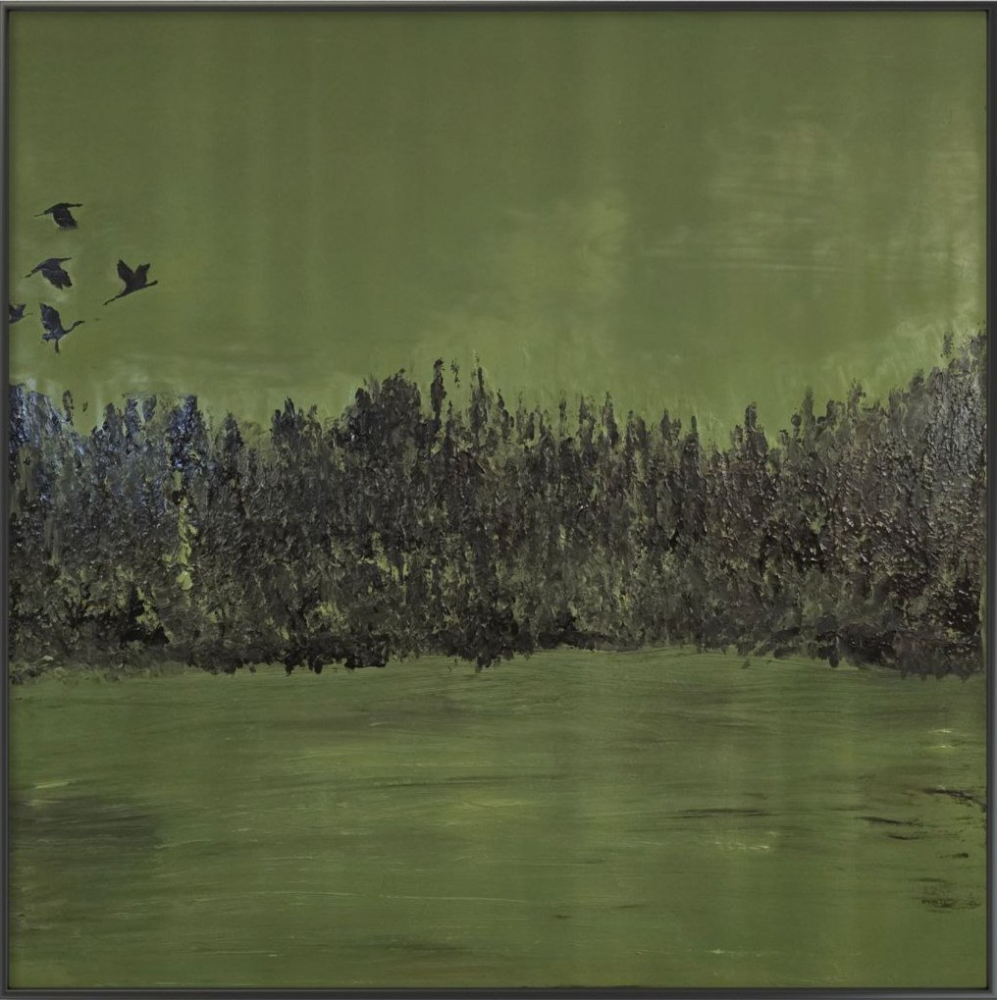

Wie ein abstraktes Bild entsteht
Kein Skizzenbuch, kein festgelegter Plan — abstrakte Malerei beginnt für mich immer mit einem Gefühl. Wie aus einem leeren Blick eine Welt aus Farbe wird.
WeiterlesenHinter jedem Bild steckt eine Geschichte. Hier schreibe ich über Entstehungsprozesse, Inspiration und das Leben als abstrakte Malerin in München.

Kein Skizzenbuch, kein festgelegter Plan — abstrakte Malerei beginnt für mich immer mit einem Gefühl. Wie aus einem leeren Blick eine Welt aus Farbe wird.
Weiterlesen
Acrylfarbe ist schnell, ehrlich und unberechenbar. Genau das macht sie zur perfekten Partnerin für abstrakte Kunst. Ein Blick auf mein liebstes Medium.
Weiterlesen
Von der Isar bis zu den Alpen am Horizont — München trägt Farben in sich, die mich täglich aufs Neue begeistern. Wie die Stadt in meine Bilder einfließt.
Weiterlesen